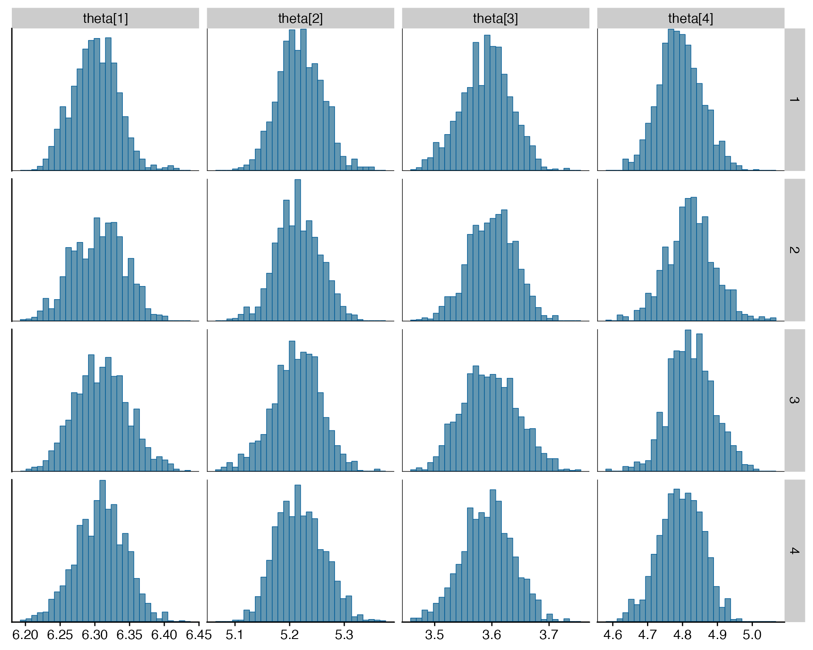

The Smooth Step: Simple spatial priors
Source:vignettes/spatial_priors/spatial_priors.Rmd
spatial_priors.RmdThe latent parameters, \(\psi\), \(\tau\), \(\phi\), and \(\gamma\), are given intrinsic random walk spatial priors, for example
\[ \begin{aligned} \psi &\sim \mathcal N(\mathbf 0, \tau_\psi \cdot Q_u) \\ \sigma_\psi &= \frac{1}{\sqrt\tau_\psi} \\ \sigma_\psi &\sim \mathrm{Exp}(1) \end{aligned} \]
Here, \(Q_u\) is defined by
\[ Q_u = R \otimes I + I \otimes R, \]
where \(I\) is the identity matrix and
\[ R = \begin{bmatrix} 1 & -1 & & & & & \\ -1 & 2 & -1 & & & & \\ & -1 & 2 & -1 & & & \\ & & \ddots & \ddots & \ddots & & \\ & & &-1 &2 &-1 & \\ & & & & -1 & 1\\ \end{bmatrix}. \]
The results were obtained by running ms_smooth() in
parrallel on four cores with four chains each run for 4000 samples. Half
of those samples were designated as warm-up and so we have a total of
8000 samples from the posterior.
Parameters
Hyperpriors
Log precision scale
| variable | mean | median | sd | mad | q5 | q95 | rhat | ess_bulk | ess_tail |
|---|---|---|---|---|---|---|---|---|---|
| theta[1] | 6.308 | 6.308 | 0.038 | 0.037 | 6.245 | 6.367 | 1.013 | 287.476 | 713.931 |
| theta[2] | 5.218 | 5.219 | 0.042 | 0.041 | 5.146 | 5.286 | 1.003 | 503.582 | 703.218 |
| theta[3] | 3.598 | 3.596 | 0.045 | 0.044 | 3.528 | 3.672 | 1.007 | 369.259 | 530.165 |
| theta[4] | 4.814 | 4.810 | 0.072 | 0.072 | 4.702 | 4.939 | 1.007 | 350.437 | 528.118 |

On standard deviation scale
| variable | mean | median | sd | mad | q5 | q95 | rhat | ess_bulk | ess_tail |
|---|---|---|---|---|---|---|---|---|---|
| theta[1] | 6.308 | 6.308 | 0.038 | 0.037 | 6.245 | 6.367 | 1.013 | 287.476 | 713.931 |
| theta[2] | 5.218 | 5.219 | 0.042 | 0.041 | 5.146 | 5.286 | 1.003 | 503.582 | 703.218 |
| theta[3] | 3.598 | 3.596 | 0.045 | 0.044 | 3.528 | 3.672 | 1.007 | 369.259 | 530.165 |
| theta[4] | 4.814 | 4.810 | 0.072 | 0.072 | 4.702 | 4.939 | 1.007 | 350.437 | 528.118 |